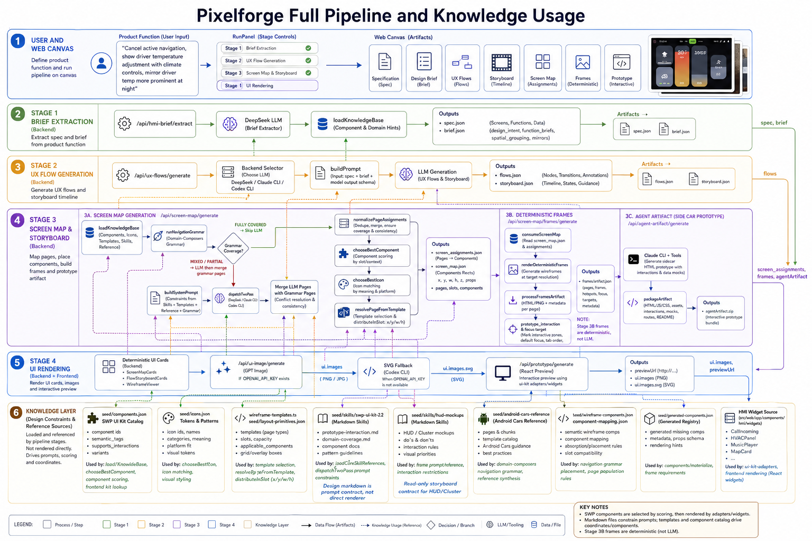

CALM · Soft Cyan
A studio for vehicle product experiences, authored from a single brief — and a cabin that responds to who is in it.
Speech analysis runs on-device. The cabin acts on the dimension a driver is least equipped to manage themselves — their own state.
The system listens for paralinguistic features — pace, pitch contour, breathiness — not the words. Nothing leaves the car.
The cabin never tells you how you feel. It offers a hypothesis ("Feeling stressed.") and proposes a response you can accept, customize, or dismiss with one word.
Lighting, music and climate move together, never individually. You feel a room turn — not three sliders.


Each state is a small composition — a color temperature, a track, a fan speed, a sentence of explanation. We designed them like rooms in a hotel, not like presets in an app.
The same state vector reaches navigation. A stressed driver gets a longer, calmer route by default. An alternative is always one tap away.

A good route card is a good concierge: state the choice clearly, offer a single alternative, name the trade-off in plain English. Anything more is a tax on a driver already deciding twenty things per minute.
One editor pane. One live cabin preview. The brief is the design file.
Every sentence in the brief is parsed into a constraint. "The car is a daily commuter for an introvert" is a different sentence than "the car is a Friday weekend toy" — the model composes the cabin against those constraints.
Tokens, not visuals, are the substrate. The studio cannot draw a screen that does not exist in the production component system. Anything you generate is, by construction, shippable.
Brief → stage extraction → scene composition → function mix → scenegraph → shipped HMI. One pass, knowledge from the Master Library threaded through every step.

Five stages, each with its own canvas. Knowledge from the Master Library flows downward into every stage; artefacts flow back up for review. Nothing escapes the loop — and nothing in the loop is invented from scratch.
For most of automotive history the cabin has assumed a single, average driver. The interesting question is not how to make the cabin smarter — it is how to make it humble enough to keep asking who, exactly, is in it.